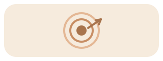
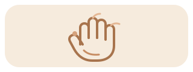
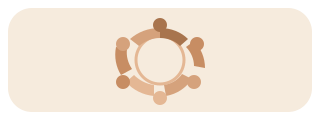
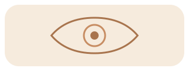
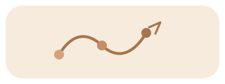
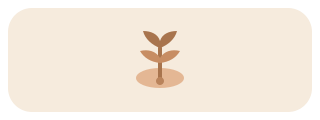

Goals
We uncover your personal motivations and how to use the practice to achieve psychological, spiritual, and other various goals.


Lucid dreaming, astral projection, and out-of-body experiences.
Discover countless worlds and meet a new reality.
Lucid dreaming, astral projection, and out-of-body experience workshops and online coaching with Karine Miras in Amsterdam. Picture worlds of endless possibilities, where the limits are defined by your imagination. You could defy your physical limitations by flying and transmuting into any shape or form. Or even just experience walking or seeing if you are physically impaired. Meet mysterious creatures and entities, and reunite with deceased or lost loved ones. Practice any skill or visit any place. Dive deeply into your own being, meet yourself, and give your inner child everything it needs. It is possible to experience reality in such an ineffable manner that it would change the way you see life.
Free access is available to people with physical disabilities.

Karine Miras, Coach

About Me
Lucid dreaming is the experience of becoming aware that you are dreaming while the dream is still unfolding, or of entering a dream directly from wakefulness while remaining fully conscious. This experience comes accompanied by a variable ability to influence the contents of the "worlds" you visit. My name is Karine Miras, and I believe that lucid dreaming, along with experiences commonly referred to as out-of-body experiences (OBEs) and astral projection, takes place within the space of the mind. At the same time, I acknowledge and respect the different beliefs and interpretations surrounding these experiences. For me, however, the interpretation is not the most important aspect. What truly matters is the depth, meaning, and transformative potential of the experience itself. Over the years, I have learned how to intentionally induce and direct these unique experiences and their states of consciousness. I personally use them for psychological growth, self-discovery, existential freedom, and as an approach to consciousness (spirituality). Having experienced their transformative potential firsthand, I now wish to share this knowledge with others, so that they too can benefit from these experiences.
Workshops
A group workshop where we explore how to induce and navigate lucid dreams, astral travel, and out-of-body experiences.
Workshops last three hours, take place in person in Amsterdam, and cost €60 per person (groups have five people). One spot in each workshop is reserved free of charge for a person with a physical disability.
We uncover your personal motivations and how to use the practice to achieve psychological, spiritual, and other various goals.

We address both the theoretical and the practical aspects of the practice. This includes guided exercises of different techniques.

Together, we form this safe space where we share our experiences and motivations. We give each other the gift of listening non-judgmentally, and with curiosity.

Coaching
Individual sessions with personalized guidance to improve your lucid dreaming, astral projection, and out-of-body experience practice.
Sessions last one hour, happen online, and cost €50. Free access is available to people with physical disabilities.
We introduce or fine-tune fundamental skills and aspects, such as dream recall, recognizing dream signs, and sleep quality. We develop also more challenging skills, such as falling asleep consciously, choosing destinations, changing the environment, summoning people and objects, intensifying experiences, and prolonging them.

We learn how to cultivate a diary and a planner that bridges us with both the past and the future of our dreams and travel experiences. This allows us to know these worlds better, making it easier to navigate them and reach our destinations and goals.

We discuss how to apply the practice to improve aspects of waking life related to personal growth, mental development, and spiritual path. I am not a psychologist and therefore do not offer therapy. Instead, I'm a coach, offering tools and insights on how to use your own dreaming mind to address the challenges that you consider appropriate for this such practices.

FAQ
There is no consensus in the scientific literature on this topic yet. From my perspective, all of these experiences share a similar underlying physiology, which is further shaped by complex psychological and cultural factors. Our focus will be on the practice itself, so that differing beliefs and interpretations surrounding these experiences do not limit our connection or our ability to learn from one another.
I'm not a psychologist or therapist, and I do not offer therapy. Instead, I'm a coach, providing tools and insights on how to use your own dreaming mind to address challenges that you consider appropriate for this practice. These workshops and sessions are educational in nature and are not a substitute for psychological or medical treatment.
Coaching is online. Workshops are held offline in Amsterdam.
No experience is required. The workshop is suitable for beginners, and the coaching sessions are tailored to your needs.

There are no words to describe the beauty of the dream worlds, and I can help you unlock these doors.
Connect with Karine